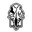

Rat Paper Scissors is a solo indie game development studio founded by pkostic (check out my socials below!). By day, I have a full-time job, but in my spare time, I pursue my passion for making games under this name.
I hold a Master's degree in Accessibility-related technology and a Bachelor's degree in Computer Science with a minor in game programming. My development toolkit includes Godot a for game creation and Aseprite and GIMP for image editing. As a big fan of FOSS, I incorporate open-source tools wherever I can. And yes, I also have a fondness for rats.
I am currently working on multiple projects, but focusing on a 2D platformer game.